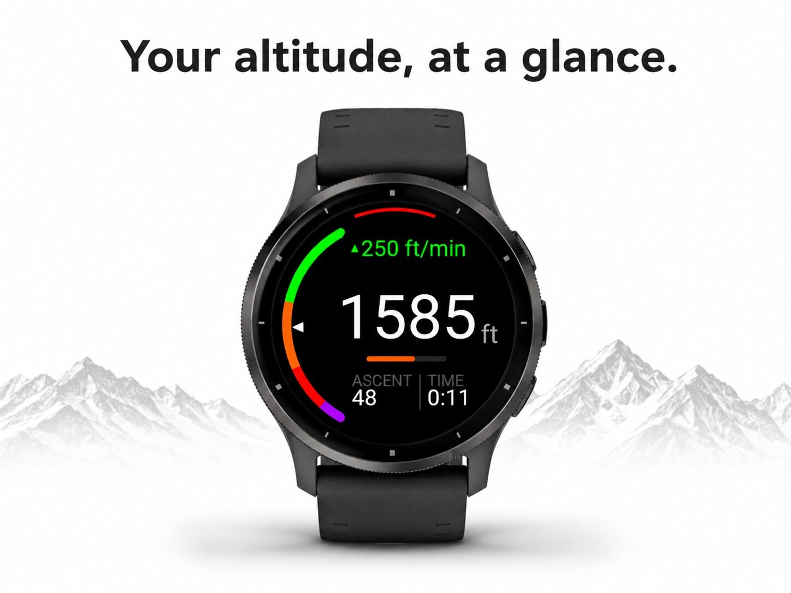
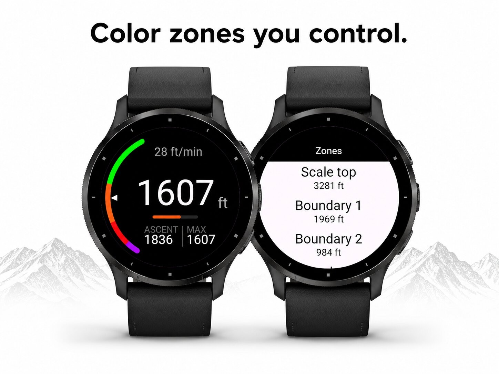
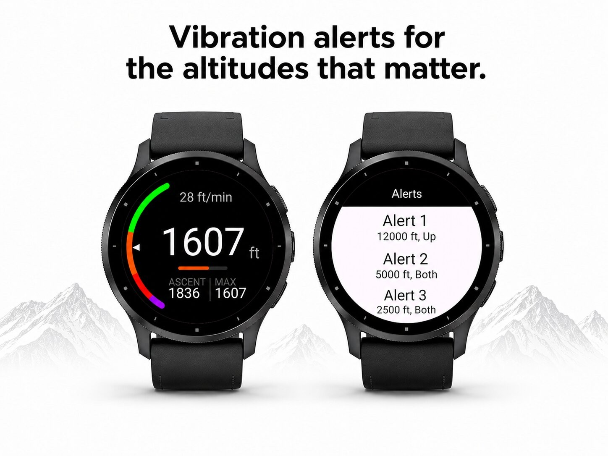
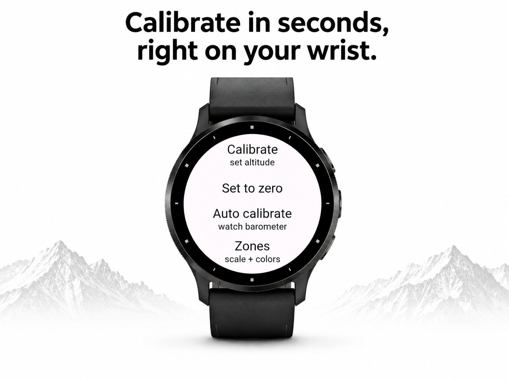
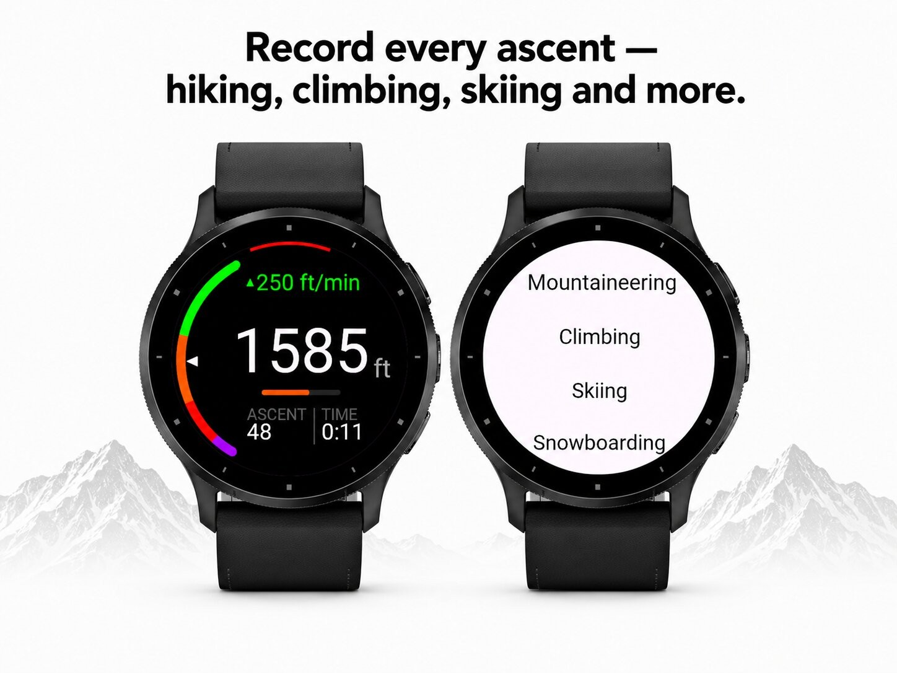

Sport & outdoors · Device app
Barometric altimeter with colour zones and alarms.





Your altitude as one big number, surrounded by a color-coded zone arc. One glance tells you how high you are.